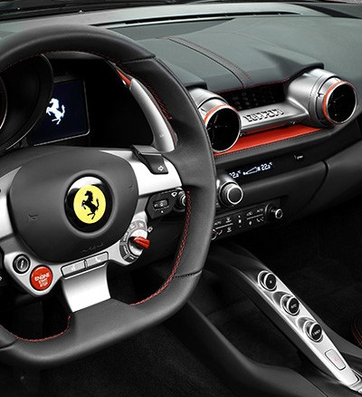

The Fastest and Most Powerful Ferrari Yet
The first and most difficult challenge Ferrari always faces when it decides to develop a new model is to push the boundaries of its own achievements yet again. This challenge is made all the tougher when the task at hand involves designing a new 12-cylinder engine, the power unit that hailed the start of the glorious Prancing Horse story 70 years ago in 1947.On this occasion, intensive research and development focused on exploiting Ferrari’s wealth of track-derived engineering know-how has produced the 812 Superfast, designed to offer its drivers both benchmark performance across the board and the most riveting and rewarding driving experience possible.
With its output boosted to 800 cv, 60 more than the F12berlinetta, the 812 Superfast is the most powerful and fastest road-going Ferrari ever built (with the exception, of course, of the rear-engined special limited-series 12-cylinders). The 812 Superfast thus ushers in a new era in Ferrari 12-cylinder history, and, in doing so, builds on the invaluable legacies of the F12berlinetta and F12tdf.
To make full use of that huge power and to guarantee perfect weight distribution, the car exploits a highly evolved transaxle architecture that couples a front-mounted engine with a rear-mounted transmission. It is also the first Ferrari equipped with EPS (Electric Power Steering).
Fuel consumption and emissions
Emissions: 340g CO2/km
Urban cycle fuel consumption: 21.4 l/100km
Extra-urban cycle fuel consumption: 11.1 l/100km
Combined cycle fuel consumption: 14.9 l/100km
NOTE: The values of fuel consumptions and CO2 emissions shown were determined according to the European Regulation (EC) 715/2007 in the version applicable at the time of type approval
The fuel consumption and CO2 emission figures refer to the NEDC cycle and to the vehicle set-up with the HELE system.
Design
Designed by the Ferrari Styling Centre, the new 812 Superfast redefines the formal language of front-engined V12 Ferrari proportions without altering either its exterior dimensions or interior space and comfort.
Power and aggregation
Seen in silhouette, the 812 Superfast has a fastback sleekness: a two-box design with a high tail reminiscent of the glorious 365 GTB4 (Daytona) of 1969, visually lowering an aggressive rear spoiler designed to guarantee downforce.
The draped design of the flanks visually shortens the tail and is characterised by sharply slanted crease lines and impressively muscular wheelarches that imbue the 812 Superfast with the power and aggression.
The 812 Superfast’s sumptuously sculptural, three-dimensional flanks are characterised by a striking vent behind the front wheels designed to suck high-pressure air from the wheelarches and then channel it along the doors.
Four round tail-lights inspired by Ferrari tradition emphasise a design crafted around horizontal lines and give the 812 Superfast a broad, imposing stance, visually lowering both spoiler and the very compact cabin without, however, sacrificing its space or that of the boot.
Light compact values
The cabin has been radically redesigned to imbue it with an even sportier character. Light, compact volumes hug the contours of the interior structures to the extent that the latter are visible in certain areas.
These ultra-taut surfaces are deliberately layered and broken up to create voids with the result that the main elements seem to float. The overall effect is of both thoroughbred racing eagerness and lean elegance that never feels overstated.
The horizontal dash loops stylishly around the central air vents for a sophisticated, sculptural, yet supremely stylish look that is also a nod to the LaFerrari’s cockpit.
The seats follow a diapason design language and exploit that expansiveness to create an interplay of solids and voids that lend character to the seat and backrest. The seats differ from and contrast with the rest of the interior surfaces, thanks to their perforated leather trim which adds a sporty touch to the new styling.
The steering wheel and its commands, the satellite pods on either side of it and the interplay of volumes and contrasting materials, combine to create an extreme cockpit in which all of the various elements are angled towards the all-important driver, around whom the volumes curve to highlight his role.